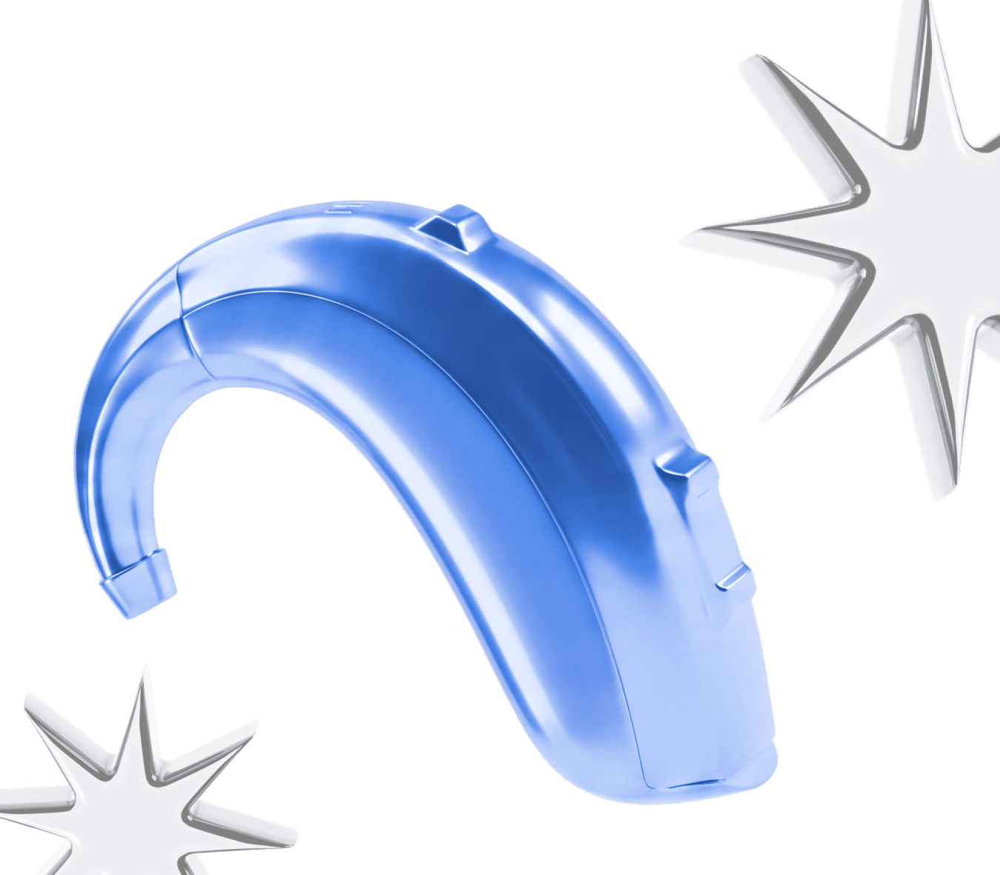

Водители
Все эти люди находятся постоянно в дороге и часто отвечают на звонки. Но вот возможности записать, скинуть или как следует запомнить информацию у них нет.

Для распространённых языков, вроде Испанского, мы предлагаем используем уже готовую языковую модель.